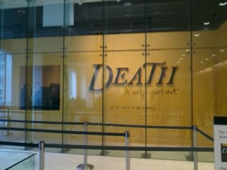
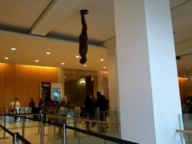
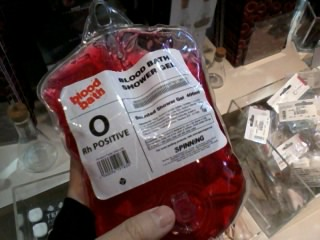
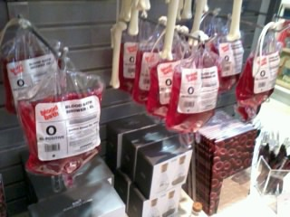
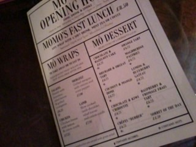
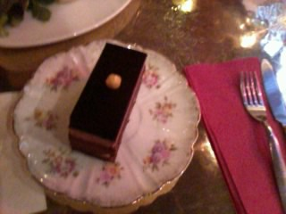

토요일
Wellcome Collection
Death: A self-portrait 전시보고왔다
유스턴역 바로 앞이라
항상 지나다녔는데 들어가본건 처음 +_+
오랜만에 해골 실컷 구경하고 왔다

입장료는 무료 +_+
1시 조금 넘은 시간에 입장했는데
이때까지만 해도 꽤 널널했음
전시 다 돌고 2시반쯤 나오는데 그때부터 대기줄이 늘기시작했다
일찍오길 잘했다며 뿌듯해했음 ^^***

전시 다 돌고 출구나오기 직전
질병 / 전쟁 / 사고 등등 사람이 사망하는 원인을 분류해서
대략적인 숫자를 한쪽벽면 전체에
infographic 식으로 표현한게 있었는데
이거 정말 인상깊었음
한참 구경하다 나왔당
(그중에 동물에 의한 공격으로 사망한 섹션에서
악어/곰등등 리스트가 나오다가 구석에 완전 쪼그맣게 'cat'이라고 써진것도 발견)
그리구 그 표를 보고 있자니
전에 우연히 봤던 유툽 동영상 하나가 생각났다^^;;;
Dumb Ways to Die
이건 좀 호불호가 많이 갈릴것 같긴한데
아 이런 또라이같은거 넘 좋아////(←;;;;;)
나와서 shop구경 :)


이거 마음에 들어 +_+
blood bath 샤워젤 ㅎㅎㅎ


날이 추우니까 뜨신 우유가 생각나서 오랜만에 카페 모모 댕겨왔다
시나몬+아몬드 우유랑 쪼코/헤이즐넛 케키 XD
이날 요 전시 하나 보고 카페다녀온게 전부인데
너무너무 지쳐서 집에와서 겔겔거리다 암것도 못하고 잠들었음;;;
요건 1월초에 다녀온
마리코 모리 전시회
학교다닐때 프로젝트 관련해서 case study를 한적이 있어서
포스터 발견하고 넘 반가웠당
입장료는 11파운드 정도
전시자체는 재미있었는데 볼게 좀 적다
출구 나오면서 읭? 이게 다여? 이런느낌^^;;;;
원래 1월이면 새해계획도 세우고
벽에 목표도 좀 써붙여보고
다이어트/운동한답시고 부질없는 저항도 하고 해야하는데
전시두개 보고 주말에 눈오고 추우니까 집에서 겔겔거리고
정신차려보니 1월 다 끝나가넹;;;